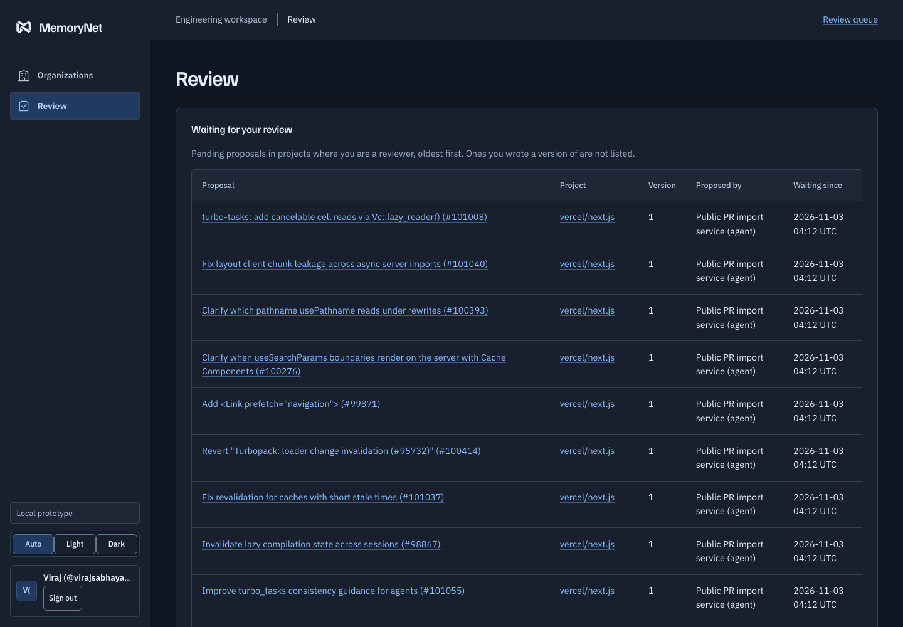

Instructions go stale silently
AGENTS.md says one thing, last month's PR decided another. Nothing flags the file, the task, or the agent still following it.
Governed decision memory · Open source
Other memory tools remember what was said. MemoryNet remembers what was decided — approved by a human, scoped to the repo and branch, cited to evidence, and flagged everywhere when it changes.
The moment a decision changes, work pinned to the old version is flagged — and stale exports are refused.
→ get_task_context {
"task": "Update the retry policy",
"paths": ["src/api/retry.ts"],
"maxTokens": 2000
}
← 200 items[0] {
"title": "Retry at most twice",
"revision": 2, "score": 0.94,
"reasons": [{ "kind": "governs_path",
"pattern": "src/api/**" }],
"citations": [{ "reference": "pull/101008" }]
} // receipt recordedTask-aware, permission-filtered, packed to a token budget — with the reason every item was included.
receipt 8f2c…a41b
memory 3b363a47… rev 2
approved by 2 reviewers · exact version
scope repo 1001 · branch main
chain sha256(prev : seq : payload) ✓
// verify anytime: npm run ledger:verifyEvery approval and delivery is chained into a tamper-evident ledger you can verify offline.
A reversed retry policy, a deprecated API, a dropped constraint — the code still compiles. The mistake ships.
AGENTS.md says one thing, last month's PR decided another. Nothing flags the file, the task, or the agent still following it.
Automatic memory recalls what was said — including the proposal that was rejected. No approval, no scope, no citation to check.
A graph knows what calls what. It doesn't know which decision a human approved, for which branch, or that it was replaced on Tuesday.
The lifecycle every MemoryNet decision follows — enforced by the database, not by convention.
Merged PRs, specs, or an agent's proposal land as cited, pending candidates. Upstream merge is never local approval.
A different human — never the author, never an agent — approves the precise text, paths, repo, branch, and validity window. 1–3 reviewers per project policy.
Agents call get_task_context for their task and files. Only approved, current, in-scope guidance returns — with reasons, citations, and a receipt.
Approve a replacement and every pinned task is marked stale. Stale context cannot be exported until a human revalidates it.

Everything a coding agent needs to stay current — and nothing it can use to approve its own guidance.
MCP · Task context
Bounded graph expansion over reviewed links (depends_on, refines, conflicts_with) with a machine-readable reason for every item — governs-this-path, matched-task, linked, shared-evidence.
Review
Text, applicability, paths, and links are approved as one version. Editing means a new version and new approvals.
Scope
Guidance applies only where a reviewer said it applies. Legacy unscoped records never leak into scoped delivery.
Radar
Tasks pin decision versions and spec hashes. Changes flag them; stale exports are refused, not warned about.
Audit
Approvals and receipts chained with SHA-256, verifiable offline, with external checkpoints against full rewrites.
Extraction · Guard
Optional model extraction proposes candidates with exact source quotes and content flags (secret, personal-data, instruction-like). Publication is always a pending proposal awaiting human review.
vercel/next.js #101008
turbo-tasks: add cancelable cell reads via Vc::lazy_reader()
Read the original PROriginal merge commit
61e1348fb523
Candidate remains pending
Imported text becomes guidance only after explicit review of the exact revision.
Inspect the review queueOriginal public source. Upstream merge does not imply local approval.
One command configures your coding client. The binding scopes every call to one project, repository, and branch — and expires.
MCP delivers reviewed guidance for the task and files being changed. Agents can propose decisions and report stale guidance; people approve every published version.
Connect a coding agentnpm ci --ignore-scripts
npm run setup -- --repo OWNER/REPO --reviewer "A teammate" --client claude
npm start{
"name": "get_task_context",
"arguments": {
"task": "Update the retry policy",
"paths": ["src/api/retry.ts"],
"maxTokens": 2000
}
}Context includes reasons, citations, and version receipts. Agents cannot approve.
Automatic recall tools are excellent at what they do. MemoryNet is built for the moment a decision must be trusted.
| Capability | MemoryNet | Mem0 | claude-mem | Graphify | AGENTS.md |
|---|---|---|---|---|---|
| Human approval of exact version | ● Enforced (DB) | — | — | — | ◐ Git review only |
| Repo / branch / path / time scope | ● All four | ◐ User/session | — | — | — |
| Citations to source evidence | ● Every item | ◐ | ◐ | ● Code refs | — |
| Stale-decision blast radius | ● Flags + blocks export | — | — | ◐ Graph impact | — |
| Tamper-evident audit trail | ● SHA-256 ledger | ◐ | — | — | ◐ Git history |
| Automatic capture | ◐ Proposals + extraction | ● | ● Hooks | ● AST build | — Manual |
| Semantic / graph retrieval | ◐ Lexical + reviewed graph | ● Vector + graph | ● Vector | ● Code graph | — File read |
| Coding-agent delivery | ● Scoped MCP + receipts | ◐ SDK | ● Auto-inject | ◐ MCP queries | ● Native |
Based on public documentation, November 2026. ● full · ◐ partial · — not a focus. Rivals lead on automatic recall; MemoryNet leads where a wrong memory is worse than none.
The lifecycle demo verifies stale-context blocking. Earlier coding observations do not establish a benefit over maintained instructions — and the site says so.
Historical observations reviewed November 3, 2026; no percentage improvement or production effectiveness is claimed. Read the observation summary · Inspect the executed lifecycle replay.
A local pilot for public
and synthetic evidence.
A configured local workspace opens as one operator; a clean checkout provides test personas. Existing GitHub or access-key login gates stay enabled, and GitHub sign-in can verify linked accounts. The app remains a local prototype for public or synthetic evidence.
Imported PRs are evidence. Scoped guidance requires explicit applicability and exact-revision approval. Pending and legacy unscoped records are excluded from scoped agent context.
Real-team benefit remains unproven. Automatic notifications, persistent task-bound delivery, and verified CI integration remain outside the current workflow.
Read the remaining workFrom a source checkout, run the decision-change walkthrough, then connect your public repository and coding agent.
Read the setup guidenpm ci --ignore-scripts
npm run demoOpen .local/decision-demo/index.html. Scripted extraction and fixture approvals; real MCP and stale-export checks. No key or account required.